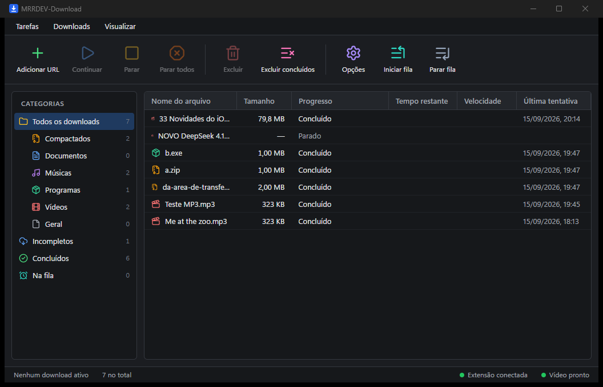
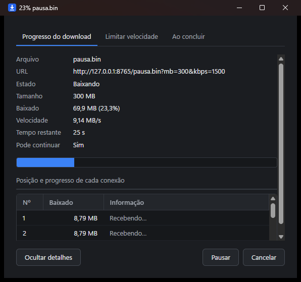

Captura do navegador
Clicou num arquivo, a janela dele aparece no lugar do download comum. Segure Alt para deixar passar.
Clique num download no navegador e ele assume: baixa em 8 conexões ao mesmo tempo, continua de onde parou mesmo depois de fechar o programa, organiza por categoria e baixa vídeo de página com um botão sobre o player.
Nada de assinatura, nada de tela de compra. É um programa só, que faz o trabalho e some da frente.
Clicou num arquivo, a janela dele aparece no lugar do download comum. Segure Alt para deixar passar.
O arquivo é dividido em partes baixadas ao mesmo tempo, o que costuma multiplicar a velocidade em servidor lento.
Pode fechar o programa, desligar o PC e continuar depois — o progresso de cada parte fica salvo.
Em cima do player do YouTube, Instagram, TikTok, Reddit e afins: escolha a qualidade ou só o áudio em MP3.
Copiou o link de um arquivo ou de um vídeo? Ele pergunta se você quer baixar. Sem precisar colar.
Limite de downloads ao mesmo tempo, limite de velocidade e uma pasta por categoria: vídeos, programas, documentos.
Não é maquete: são telas do programa rodando de verdade.


Leva dois minutos. A extensão é o que faz o navegador conversar com o programa.
Baixe e execute o instalador. Ele não pede permissão de administrador e já abre junto com o Windows, minimizado.
Guarde a pasta num lugar definitivo (ela precisa continuar existindo), por exemplo em Documentos.
brave://extensions, chrome://extensions ou edge://extensions e ligue o Modo do desenvolvedor.
Escolha a pasta que você descompactou. Depois, recarregue as abas que já estavam abertas.
O Windows pode mostrar o aviso "Windows protegeu o computador", porque o instalador ainda não tem certificado de assinatura (que é pago). Clique em Mais informações → Executar assim mesmo. O programa se atualiza sozinho e cada atualização é verificada por assinatura criptográfica própria.
Alguns antivírus (como o Kaspersky) e o próprio Windows podem marcar o instalador por engano — um falso positivo. Não é vírus. Acontece porque o programa ainda não tem um certificado de assinatura (é caro), e o antivírus desconfia de um programa novo, sem assinatura, que baixa componentes da internet. O código é aberto e cada atualização é verificada por assinatura criptográfica própria.
A maneira mais fácil: baixe a versão portátil (.zip),
que não tem instalador. Descompacte numa pasta fixa e rode o mrrdev-download.exe.
Se ele apagou o arquivo: abra a Quarentena do antivírus, Restaurar o MRRDEV-Download e marque como confiável (adicionar à exceção). No Windows Defender: Segurança do Windows → Proteção contra vírus → Histórico de proteção → Restaurar.
Esse aviso azul não é o antivírus: clique em Mais informações e depois em Executar assim mesmo.
| Sistema | Windows 10 e Windows 11, 64 bits. Não há versão para macOS ou Linux. |
|---|---|
| Navegadores | Brave, Google Chrome, Microsoft Edge, Opera e Vivaldi (qualquer navegador baseado em Chromium). Firefox ainda não. |
| Pré-requisito | WebView2, que já vem no Windows 11 e na maioria dos Windows 10 atualizados. Se faltar, o instalador avisa. |
| Para baixar vídeo |
yt-dlp e FFmpeg. O programa instala o yt-dlp sozinho em Opções → Vídeo; para o FFmpeg, rode
winget install yt-dlp.FFmpeg.
|
| Não funciona com | Conteúdo protegido por DRM (Netflix, Prime Video, Disney+) e sites que bloqueiam download por token de sessão. |
Ele procura versão nova uma vez por dia e avisa. Você clica em "Atualizar agora" e pronto. Também dá para procurar na hora, em Ajuda → Verificar atualizações.
Como ela não vem de loja, o navegador não a atualiza sozinho: ela marca o ícone quando sai versão nova e traz o link para baixar.